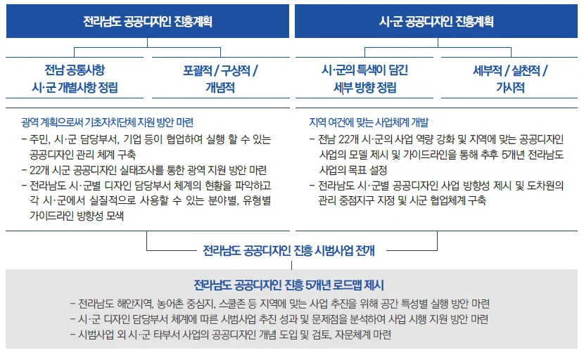
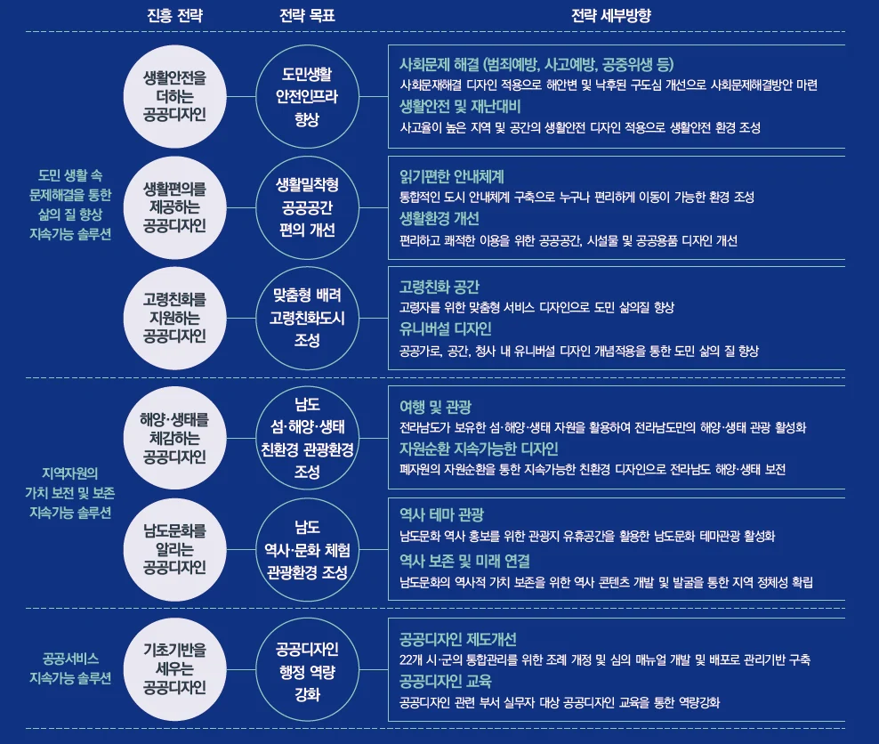
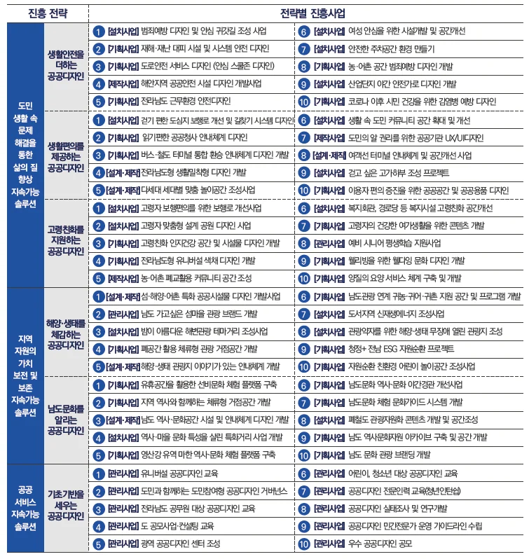

전라남도 공공디자인 진흥계획
전라남도 공공디자인 진흥계획은 「공공디자인 진흥에 관한 법률」 제 6조 및 문화체육관광부 공공디자인 진흥 종합계획과 연계하여 전라남도 공공디자인 진흥과 발전을 위한 종합계획 수립함에 있다. 시·군을 포용하는 광역 계획으로서 공공디자인을 통한 전라남도 22개 시·군의 역량강화를 위해 지역에 맞는 공공디자인 사업모델과 가이드라인을 제시한다. |
 |
<전라남도를 대표하는 키워드> 광역 계획으로서 전라남도의 다양한 상위 계획과 정책의 분석을 통해 공공디자인 진흥 전략과 방향을 설정해 전라남도의 전반적 비전과 추진내용들과 부합 할 수 있도록 하였으며, 이들을 통해 5개의 상위 키워드가 도출되었다. 섬·해양 관광 : 전국 최다 도서를 보유하고 있는 전라남도는 지역의 자원인 도서들을 활용하여 섬·해양 관광의 관심이 집중되어 이와 관련된 정책과 계획이 다수 포진되어있다. 고령친화 : 지속적인 인구 유출과 고령화, 저출산으로 전국 광역지자체중 가장 높은 고령화와 다수의 인구소멸 위험 지역에 대해 정책적 관심이 높게 관찰되었다. 생태·친환경 : 풍부한 생태·친환경 자원으로 산림, 숲 가꾸기 등 다양한 정책과 계획 등 관심이 높아지고 있으며, 친환경을 위한 신재생에너지 역시 관심이 높다. 도민안전 생활편의 : 도민의 삶의 질 향상 및 정주여건 환경 개선을 위해 도민안전환경 조성과 생활편의를 위한 정책 및 계획에 대한 관심이 높다. 남도문화 : 전라남의 많은 문화유산, 선비문화, 역사문화 자원 탐방 등 역사문화 홍보 및 체험을 위한 정책 및 계획적 관심이 높아지고 있다. 위의 도출된 키워드와 공공디자인 진흥계획의 5대 목표를 결합하여 전라남도만의 공공디자인 진흥 6대 목표와 비전을 성립하고 이에 대한 공공디자인 진흥 로드맵을 구축하였다. |
2010 전라남도 공공디자인 기본계획의 비젼과 2015 전라남도 공공디자인 기본계획의 비젼을 버전업하는 개념으로 지속가능성을 결합하여 ‘청정PLUS 전남’이 도출되었다. 지속가능한 도민의 삶의 질을 향상시키고 지역자원의 가치를 보전 및 보존하는 공공디자인으로 「첫째, 도심 생활 속 문제해결을 통한 삶의 질 향상」, 「둘째, 지역자원의 가치 보전 및 보존」, 「셋째, 공공서비스」 의 지속가능한 대안으로서 6개의 공공디자인 진흥 목표가 구체화 된다. |
 |
<공공디자인으로 진흥할 수 있는 방법, 진흥사업모델 60개> 공공디자인을 통해 도시가 진흥할 수 있는 방법 중 하나로 진흥사업모델은 지자체에서 가장 효율적이고 빠르게 공공디자인을 통해 도시변화에 가치추구를 할 수 있는 방법이다. 전라남도 공공디자인 진흥계획에서는 공공디자인에 대해 행정가들이 보다 쉽게 계획을 구축하고 활용할 수 있도록 진흥사업모델 60개를 개발하였다. 현재 전라남도의 22개 시군에서 진행하고 있는 공공디자인관련 사업들을 수집하고 이를 공공디자인 진흥전략의 속성에 맞게 구분 및 연계하여 전략별 사업 10선씩 개발하게 되었다. 이들은 공공디자인 진흥법에 의해 공공디자인 사업을 설치 및 제작 뿐만아니라 조사, 기획, 관리 등으로 보는 법령에 맞게 구분되었다. |
진흥사업모델을 구축할 시 도정계획, 주요 업무계획, 시·군정계획, 시·군 설문조사 등을 토대로 방향성과 키워드 등이 매칭되어 사업 필요성을 검증하여 기존의 사업들이 공공디자인 관점에서 고도화 될 수 있도록 계획되었다. |
 |
본 계획에서는 리스트업과 함께 각 진흥전략별 기본방향을 제시하고 사업별 간단한 사업계획을 제안한다. 사업계획에는 사업모델이 도출된 개발 배경부터 함께 작성되어 있기 때문에 실무자가 본 계획을 실행함에 있어 타당성을 확보할 수 있다. 또한 사업계획 내용과 함께 검토해야 할 항목을 제시하고 지원할 수 있는 부처 사업이 작성되어 있어 사업진행에 기반으로서 활용될 수 있다. 더불어 타 지자체 사례를 이미지와 함께 넣어 이해를 높여주고 있다. 각 전략별 시범사업을 함께 제안하였다. 전라남도 내 임의의 대상지와 사업내용, 조성 전과 후의 이미지를 통해 본 계획에 실현성을 높일 수 있도록 작성되었다. 이는 사전 22개 시군의 요청사항을 고려하여 작성되었다. |
60개의 진흥사업모델의 사업별 우선적으로 실행이 요구되는 22개 시군들을 마지막으로 정리하였다. 이는 선정기준을 통해 범죄분야 지수, 해안지역 생활안전 등급 구분, 시군의 의견수렴 등을 통해 정리한 것으로 본 기준으로 사업을 수행할 시 가장 효과적이라 판단되는 지역을 표기한 것이다. |
공공디자인 진흥계획은 공공가치 경영 관점의 계획이라 볼 수 있다. 국가 공공디자인 정책의 전략들이 어떻게 전라남도 공공영역에서 실현되게 할 것인가에 대한 행정, 제도, 경영, 정책, 전략 등 다관점에서의 실천 방법론이라 볼 수 있다. 이를 위해 전라남도의 공공디자인 진흥계획에는 공공디자인 정책의 기본 목표와 방향, 종합적ㆍ체계적인 관리에 관한 사항, 진흥을 위한 사업의 유형, 관련 제도, 행정, 공공디자인 진흥을 위한 관련 분야와의 협력 및 도민 참여에 관한 사항이 포함되어 있다. 또한 전라남도 공공디자인 진흥사업들은 공공의 이익과 안전을 최우선으로 하고 지역의 아름답고 쾌적한 환경을 조성하고, 연령, 성별, 장애 여부, 국적 등에 관계없이 모든 사람들이 안전하게 이용할 수 있는 디자인을 목표로 수립되었다. 다양한 이해관계자가 디자인 과정에 참여할 수 있는 방안과 적극적 협력체계 등 거버넌스를 기반으로 통합적 관점의 공공디자인이 구현될 수 있도록 하였다. 이러한 전라남도의 공공디자인이 전략적으로 활용되기 위해서는 첫째 도민의 삶에 체험적으로 경험할 수 있도록 지역 민원과의 연계가 중요하다. 대부분의 민원 주제들은 공공디자인 진흥 주제인 ‘안전’ ‘편의’ ‘배려’ ‘품격’과 일치하므로 공공디자인의 구현을 통해 도민의 문제해결에 적극적인 수단으로 활용되어야 한다. 둘째, 공공디자인 사업이라고 단독으로 실행될 것이 아니라 규제가 아닌 권고와 유도의 개념으로 모든 실행사업에 공공성의 부가가치를 부여할 수 있는 협력 모델로 가야 한다. 공공디자인진흥계획을 참고로 한다면 예를 들어 ‘가로 환경 개선 사업’은 ‘장애 없고 읽기 쉬운 가로환경조성 사업’이라는 공공가치가 향상되는 사업으로 고도화 될 수 있다. 셋째, 공공디자인 진흥법 및 진흥조례를 근거법으로 “공공디자인 사업” 실행력을 강화하여 활용할 수 있다. 설치사업뿐 아니라 기획, 조사, 분석, 운영 및 행정, 제도, 실행 수단의 근거가 될 수 있다. 공공디자인 진흥계획을 통해 지역의 사업들을 법정계획안에서 공공적 가치가 향상되도록 체계적, 제도적으로 정리 관리가 가능하다. 마지막으로 공공디자인 진흥계획은 공간의 기능적 관리가 아닌 사람에 대한 질적, 가치적 관리의 수단으로 활용될 수 있다. 디자인을 통해 공공가치를 향상 시킬 수 있는 법정계획으로 도민의 삶을 직접적으로 향상시킬 수 있는 잠재력을 가지고 있는 것이 바로 전라남도 공공디자인 진흥계획이다. |
이 글의 판본과 수록 정보 ＋
파일명에 이현성 표기; 실제 저자·기여 확인 필요
원고·초안의 표현을 보존해 수록한 온라인 편집본입니다.
- 수록 자료
- 전라남도 공공디자인진흥계획(이현성).hwp
- 자료의 날짜 단서
- 2022-11-25 · 실제 발표일과 다를 수 있습니다.
- 관련 파일
- 1개 / 서로 다른 본문 1종